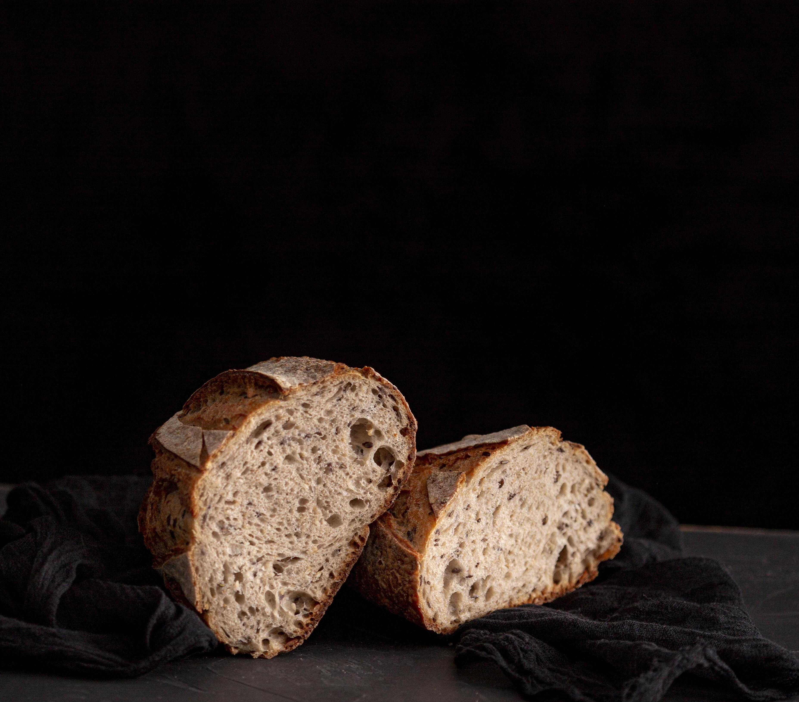

The aroma of warm yeast and grains wafts from the bread, inviting you to tear off a piece and savor its comforting taste.
Whether it’s a rustic baguette, a hearty whole-grain loaf, or a delicate brioche, bread is a staple that transcends cultures and brings people together around the table.
Bread symbolizes sustenance, community, and sharing. Breaking bread together is a universal act of hospitality.
Principal ingredients
Flour
Water
Yeast
Salt
Oil
Principal Way To Do Bread
Mixing:Combine flour, water, yeast, and salt to form a dough.Knead the dough until it’s smooth and elastic.
Rising (First Proof): Place the dough in a greased bowl, cover it, and let it rise until doubled in size (usually 1-2 hours).Yeast ferments the dough, creating air bubbles.
Shaping:Punch down the risen dough to release excess gas. Shape it into the desired form (loaf, baguette, etc.)
Second Proof:Let the shaped dough rise again (about 30-60 minutes).
Baking:Preheat the oven.Score the top of the dough to allow expansion.Bake until golden brown and hollow-sounding when tapped.
Cooling:Let the bread cool on a wire rack.Enjoy fresh or store in an airtight container.